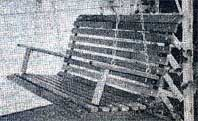

The Mother Earth News (restricted) , P.O. Box 70, Hendersonville, N.C. 28791
If you now operate, or have ever operated, a successful home business that was inspired by en article you read in MOTHER, tell us (in about 500 words) when and where-and with how much "seed money"-you started your venture. Because if your story can be fitted into an upcoming installment of BOOTSTRAP BUSINESSES, you'll receive [1] the warm satisfaction of knowing that you helped someone else find the happiness you enjoy and [2] a free two-year new or renewal subscription to THE Mother Earth News (restricted) .
My husband started reading your magazine way back when, with issue 10 ... so, you see, we've been in a MOTHER frame-of-mind for quite some time. And, Stan being a carpenter, our brains have perked up particularly when we spied articles on woodworking.
It should come as no surprise, then, that Joseph R. Hunks's Bootstrap Businesses letter about his homemade furniture (In MOTHER NO. 57, page 138) gave us just the impetus we needed-during the frigid season of 1979 when Stan had little work-to get both him and me going at our own particular enterprise. Our bush mess was born during that long, cold winter... as we started building items that would bring people pleasure for many springs, summers, and autumns to come: porch swings!
We already had our woodworking tools, so our initial investment was only $40 ... for the materials to build our first two swings. The prototypes sold right away, and we invested in more materials with the profits.
Last year we grossed $1,525 with our part. time business, and this year-having already brought in about $5,300-we're beginning to look forward to the time we can gain the satisfaction and independence that comes with working full-time for ourselves.
Our swings sell wholesale for $47.50 or $57.50-depending on the size-and retail for about one-third more. Write us for s free flyer.
Marian Primeau
Stan's Woodworks
Dept. THEN
Rt. 1, Box 113A
Pine Grove, Pa. 17963
Two years ago, my husband Alan and I sold our home in California and moved-with our three children-to 10 beautiful acres in south ern Oklahoma. When we arrived, we traded our new van for a double-wide mobile home. Then we had a well drilled, a septic system put in, and two stock tanks installed ... only to find ourselves flat out of cash.
Alan had, by then, already started bringing in some money by working in a local factory, but his wages just weren't enough, and we had to do something fast! Fortunately, AI's mother came to our rescue by lending us her collection of THE Mother Earth News (restricted) ... and issue 52 contained an idea that was to save us from bankruptcy.
"How to Go to Work for Yourself" (on page 36) gave Alan and me the push we needed to get going in a business of our own, and after much discussion, we settled upon starting a clean up/fix-up service. Our initial investment totaled just $33.50 (for radio advertising and business cards). Further exposure was provided by the local newspaper, which was kind enough to do a feature story on our new enterprise ... and the response was little short of overwhelming!
Our first four months in business brought us an average income of $800 per month, and we became experts al barter. I obtained free chiro-practic treatments in payment for Alan's doing some vent work for the doctor, we painted the inside of a home in exchange for a calf that was ready to be butchered, we traded nicks of wood (left over from one of our jobs) for a much-needad truck tire and jack, and we regularly clean a beauty shop for our family's haircuts.
Alan and I handle jobs that larger businesses can't be bothered with, so we really have no competitors. And we have the advantage of being our own bosses ... which means that, at long last, our time is our own!
J.C.
Oklahoma
It was actually the touch of a new IBM selfcorrecting typewriter that inspired me to go into business for myself. I knew that I could really bum up the paper with such a marvelous machine, but the cost of the device was quite beyond our means ... especially since I was five months pregnant with our first child, and since, as a result of my pregnancy, we would soon become a one-paycheck family with a new mouth to feed.
The solution to my dilemma came when I read "The Best Home Typing Business of Them All" In MOTHER NO. 25 (page 44). I decided that a similar enterprise would provide both the rea son and the means to own the machine I wanted... and would give my husband and me extra dollars to help feed and care for the soon-to-come happy addition to our family.
I cleaned up my clunky but reliable old electric typewriter (to be used until I earned the new dream machine) ... got out my dictionary... spent $10 for a ream of typing paper, $2.00 for correction tape and fluid, and $5.00 for type writer ribbon ... and then I placed my ads: three months' ($20) worth of space in the newspapers of two nearby universities (which I had decided would be my market), and free signs posted in libraries, dormitories, and student centers. With that initial investment I quickly had as much business as I could handle.
I charged different rates for different assignments, based upon the necessary typing time, and soon was earning an average of $8.00 an hour ... not bad for a job with completely flexible-hours and virtually no overhead.
Now, I have s thriving business that brings a very helpful extra income, contact with new people all the time, an IBM self-correcting typewriter (aha!), a contented husband, and a hoppy and healthy young son who is our pride. Thanks, MOTHER!
Helen Prescott
Levering, Michigan
A MOTHER-type couple that my husband and I met a few years back got us interested in self-sufficient living, raising our own food, recycling, and reading THE Mother Earth News (restricted) . Then the article called "Home Garden's Experts Design a Vegetable Mini-Garden for $10" (in MOTHER NO. 27, page 40) encour aged us to do something about our new inter ests. We adopted the piece's plan for a 10' X 20' garden plot In our urban back yard, and that led us to the need for tomato stakes.
The commercial cages were so outrageously priced that we decided to find an alternative source of props for our tomato plants. And we did. The worn-out box spring that had been tossed into our neighbor's trash pile was, we discovered, framed with strips of wood that were perfect for supporting our plants.
Pretty soon we got another idea ... and advertised in the paper, offering to pick up old box springs. Well, we wound up with 50 of the discarded mattress bases ... and we made use of every part: The wood became four-foot vegetable props ... the cloth covering, strips to tie the growing plants to the stakes ... the cotton bah ting, furniture padding... and the springs, custom "hoppers" for the neighborhood young-sters (who were all soon jumping for joy).
We continued collecting box springs-and anything else we could convert into tomato stakes-and when the season for selling such sticks of wood arrived, we had about 2,200 of them. A local farm produce company snapped up 1,840 of our scrounged love apple props and paid us $230 ... or $1.00 for every eight stakes. The rest we sold to the public, charging $1.00 for six. So, since newspaperads cost us $30 and we already had the table saw we used to cut the wood, our net profit was about $260 ... plus a number of new friends and many interesting conversations.
The second year we sold the fruit "braces" again and grossed $400 ... with expenses of $50 for ads and $7.00 for a new saw blade. Not bad for a hobby that required only a couple of hours a week.
However, we're no longer in the tomato stake business. "Chimney Sweeps Are Cleaning Up!" in MOTHER NO. 49 (page 110) converted my husband into a top-hatted soot catcher, and we're too busy looking for a homestead where we can become really self-sufficient to think right now about selling tomato stakes.
Jean LeBlanc
Springfield, Mass.
Not long ago, my man-who's a plumber-wanted some advertising painted on his truck. I volunteered to try my hand, since the nearest sign shop was 220 miles away.
Well, after completing that job (which turned out pretty well), and receiving a lot of encouragement from my guy and from R.I. Ball's article, "Hand-Lettering Makes Sense: Cash in on Old English" (MOTHER N0.24, page 14), I readily agreed when a neighbor asked me to do a sign for him. With a hefty Investment of $28.80 (pencil, 25 cents... gum eraser, 35 cents... measuring tape, $8.00... one quart of point, $5.20... sign-board, $15...paintbrush, already mine), I set to work on my first commercial job.
That same week I decided to go public, and placed an ad in the local paper for $3.00 weekly. Contracts started coming in for business and vehicle signs, and-though I probably didn't charge enough for my first few jobs-I gained experience and confidence ... and a growing reputation! Since we live in a seaport town, I expanded my service to include painting boat names ... which just happen to need redoing about once a year! Now I keep track of all new businesses coming into town and "beat the docks" every summer to increase my business. .. and I find that every new job is easier than the last.
I'm arming about $3,000 yearly, most of it in the summer ... which-added to what my man brings in-helps us to live more comfortably, and leaves me plenty of time for working on the homestead.
The joys of "signing" for me are ... a lack of boredom (every job is different), self-employment (I set the hours), no competition (Homer is a small, isolated town), and a way to use my otherwise hard-to-live-off bachelor's degree in art. And, besides all that, who can beat getting paid for something he or she really finds enjoyable? IL's fun to be...
Suzanne the Sign Painter
Homer, Alaska
|
 |
|
|